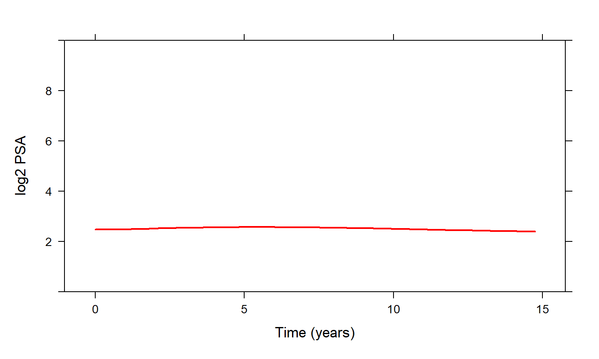
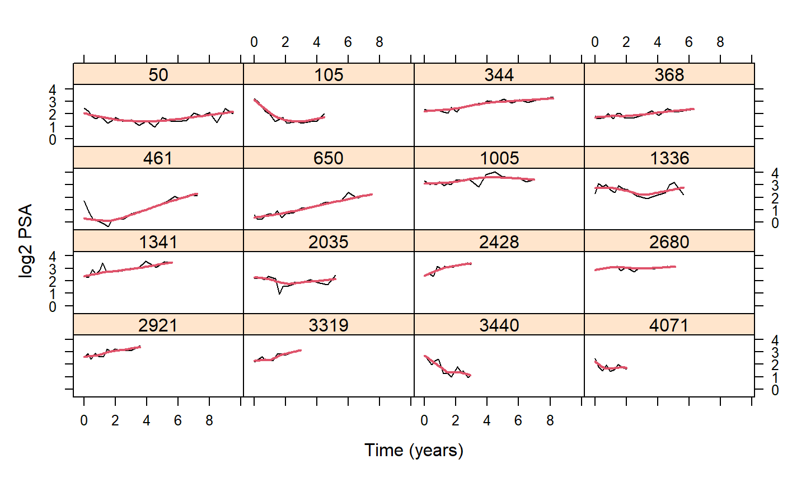
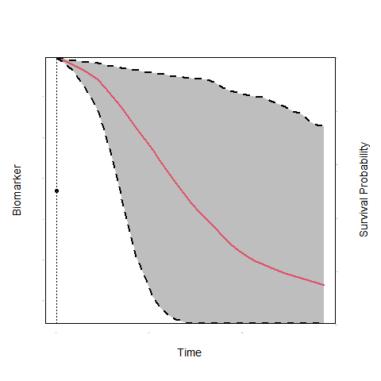
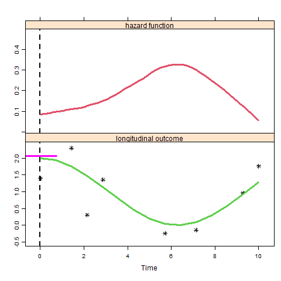
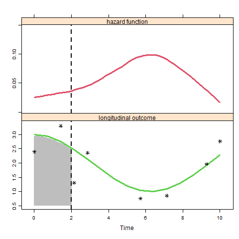
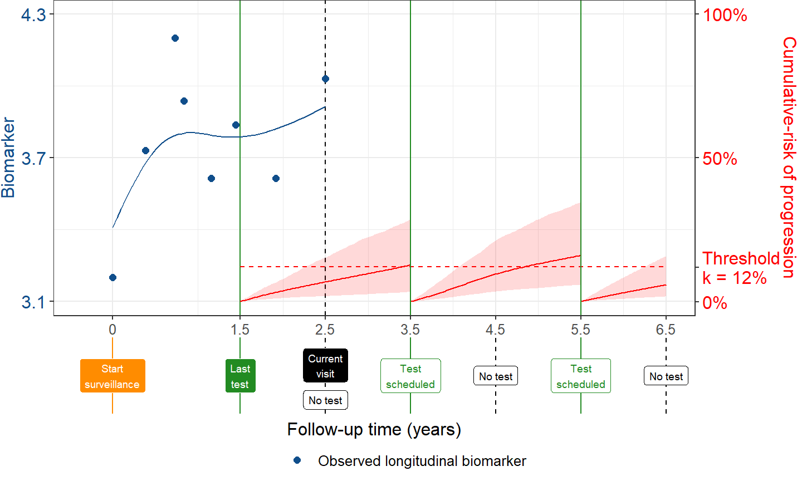

CISNET Annual Meeting
November 12, 2021
Access to serial measurements increases over years
How can we improve biopsy scheduling?
When to initiate salvage therapy?


How to better plan biopsies or salvage therapy?
Joint Models for Longitudinal & Survival Data




Transition-intensities or cumulative incidences can be fed into natural history models
Thank you for your attention!